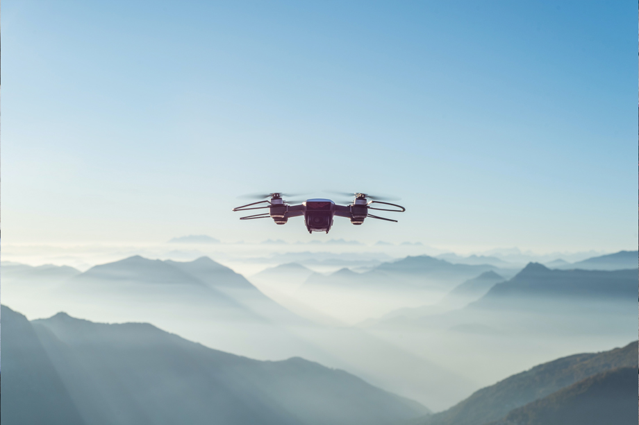
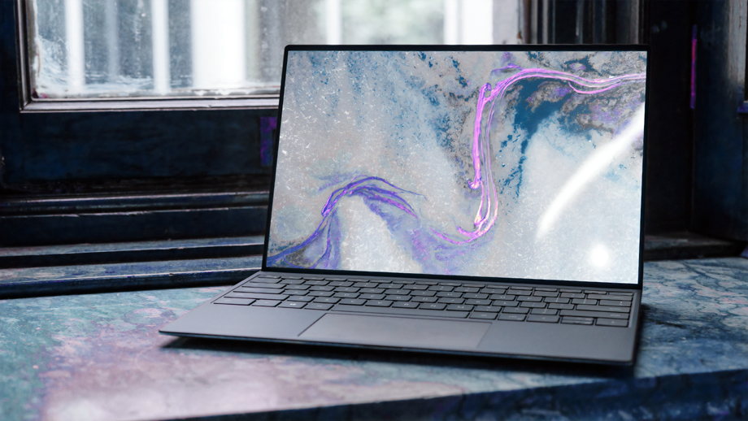

"I just knew it! Well, I wasn't gonna let you get all the credit and take
all the reward. Hey, i knew there was moew to you than money. Oh, no!
Oh, my! Artoo! Can you hear me?""
Toujours plus de drône dans le ciel
Publié le 10
février 2025 parJames Webb
Your friend is quite a mercenary. I wonder if he really cares about
anything...or anyone. I care! So...what do you think of her, Han?
I'm trying not to, kid! Good... Still, she's got a lot of spirit.
I don't know, what do you think? Do you think a princess and a guy
ike me... No!

Le drône est-t'il le nouveau meilleur ami de l'homme.
En lire plus
Internet, c'était mieux avant
Publié le 7
janvier 2025 parArthur Poulas
Yes, Our scout ships have reached Dantooine. They found the remains of
a Rebel base, but they estimate that it has been deserted.

Au moins on peut changer son fond d'écran.
For some time. They are now conducting an extensive search of the
surrounding systems